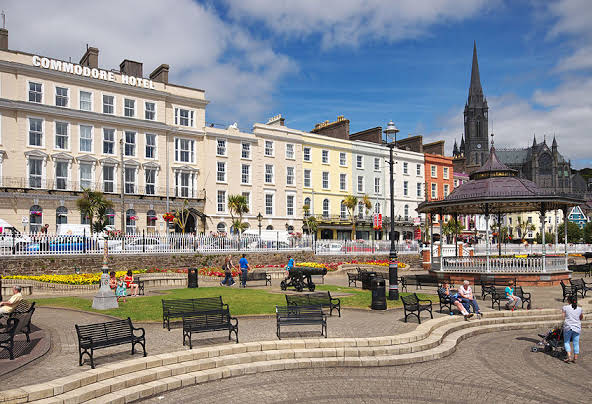
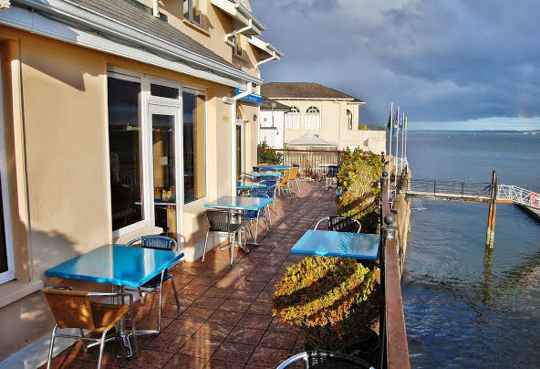
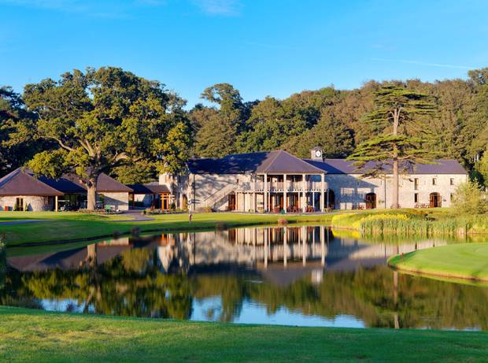
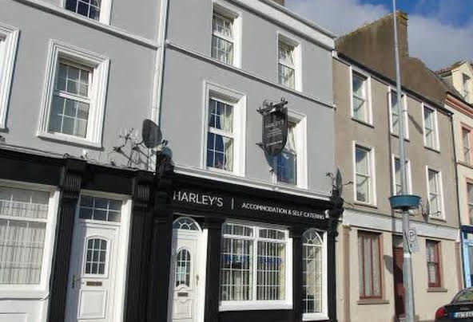
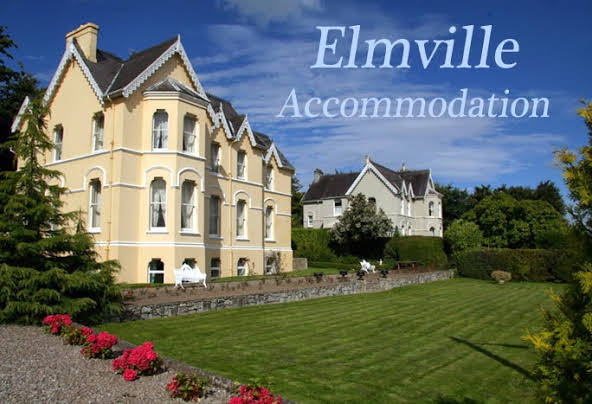
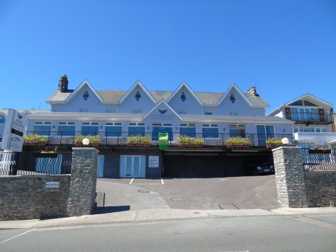

Commodore
Hotel.
Set in a Georgian building next to the Titanic Experience Cobh, this relaxed hotel
overlooks Cork Harbour and is an 8-minute walk from St. Colman's Cathedral.
Straightforward rooms, most with sea views, feature tea and coffeemaking facilities, as well as TVs. Free
Wi-Fi is available.
An elegant restaurant has high ceilings and period features. There's also a casual fireside restaurant and
a nautical-themed bar with live music. A rooftop garden offers views of the harbour and the cathedral.
•
4 Westbourne Pl, Kilgarvan, Cork
• Phone:(021) 481 1277
• Email: commodorehotel@eircom.net
WatersEdgeHotel.
Straddling
the Cobh waterfront at the town centre's edge, this airy, casual hotel is
within a 3-minute walk from IE trains and the Titanic Experience museum, and 25.7 km from Cork.
The country-chic rooms are individually decorated and feature Wi-Fi access, TVs with satellite channels,
and tea and coffeemaking facilities; many have harbour views, and some have balconies.
Breakfast is included. There's a modern bistro, and a casual bar featuring a terrace with sea views.
•
Yacht Club Quay, Kilgarvan, Cobh, Co. Cork
• Phone:(021) 481 5566
• Email: info@watersedgehotel.ie
Fota Island Hotel and Spa.
Whatever else you're coming for, a great night's sleep is waiting for you here in Fota Island Resort -
whether you're checking into one of our harmoniously stylish rooms, or self-catering in one of our comfy,
well-equipped lodges.
You'll know, from the moment you arrive into our exquisitely designed foyer, that a peaceful and luxurious
night's sleep awaits you at this 5 star hotel. The resort also boasts three championship standard golf
courses which makes it the premier golf hotel in Cork.
• Fota Island, Co. Cork
• Phone:(021) 467
3000
• Email: reservations@fotaisland.ie
Harleys
Townhouse.
Here at Harleys we pride ourselves on offering quality budget accommodation. Harleys
is a freestyle accommodation where guests are free to come and go as they please. All our rooms have modern
furnishings with TV’s and free Wi/fi, all our rooms also have their own en-suite with complimentary
toiletries. 2 of our rooms have uninterrupted views of Cork Harbour, the world’s second largest natural
harbour, and directly onto the spot where the ill-fated Titanic last dropped anchor.
• 24 Harbour
Row, Cobh, Co, Cork
• Phone:(021) 481 4290
• Email: info@harleysbnb.com
Elmville.
Elmville
B&B, overlooking Cork Harbour, is just a short 5 minute walk from Cobh Town center.The immensely popular
Elmville B&B is a superb example of a restored Victorian House set on its own grounds overlooking Cork
Harbour, one of the finest natural Harbour’s’ in the world. Your host, Olive O’Brien, will make your stay a
truly comfortable, warm and enjoyable experience. Elmville B&B is a superb place to stay while you explore
the Rings of Cork and Kerry.
•
Lower Road, Cobh, Co. Cork
• Phone:(021) 481 3206
• Email: bookings@elmville.com
Bella
Vista Hotel and Self Catering Suites.
Welcome to the Bellavista Hotel & Self-Catering Suites, luxure 3 star accommodation providers in Cobh.
Situated above the picturesque tourist town of Cobh in Co. Cork, Ireland, and overlooking the magnificent
Cork Harbour, our accommodation options command some of the best views in town. Choose from one of our
hotel rooms, each decorated individually or one of our Self-Catering suites so you and your family can come
and go as you please. We also have a selection of Self-Catering Townhouses in Cobh Town Centre.
•
Spy Hill,
Bishops Road, Cobh, Co. Cork
• Phone:(021) 481 2450
• Email: info@bellavistahotel.ie